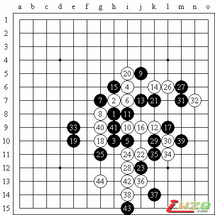
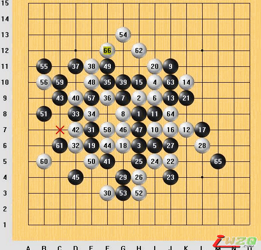
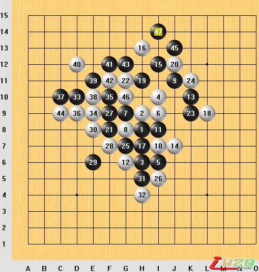

我的感受我的棋
#1 我的感受我的棋 作者：有志青年 发表时间：2009-4-10 9:40:44
【有志注：原文发表于掌棋盟论坛 http://www.zhangqimeng.com/viewthread.php?tid=6164 】
严严寒冬悄然逝去，暖春3月已然降临。在大地复苏的时候，我渐渐又有对五子棋的热度了，奋勇报名与杀手的交流赛，收获良多。。。。。。
PART1 看清自己的不足。我的第一盘棋无伤大哥已经评论过了我从中获益非浅，先不说下的怎么样，说说心态。我本是壮志满怀投入沙场的，但是当比赛开始时满脑空白，之前准备的一些变化突然随着比赛的开始消失了。。。按照多数人的说法“缺练” 的确是“缺练”（我准备的多数是疏星的变化）。比赛开始，我执白， 当我下第2手的时候对方指定瑞星 我心就凉了一半。因为对于瑞星的各种12的下法我没有了解透 对于棋盘的把握不好。。。。我从容的换了。因为底气的不足 为第一盘的失利埋下伏笔。
PART2:对局中的检验悲惨的一局。。。

前17手是定式。貌似我听某位高人讲过这个开局的前面的一些应对19手是我考虑了很久下的一手。当时我有两个选择的点 一个是i5另一个是实战的点。我放弃I5的原因是顾虑左下的战场。粗略的估计了下左下白棋能成连续进攻的手断不少。我没有算出上方有简单杀。所以把19选在了下面。（其实我还有个想法就是19可以为左侧黑棋的攻击奠定基础。（我在第2局验证了这个想法 证明我的想法不好实现，至少我没在实战中想出应对方法。）白从20开始发动进攻由上至下。利用右侧子力优势盘杀于我，我采取以21切断，23 25围内分割，缓解白棋攻势。白棋见我围堵打算扯动阵形右移阵地与右侧进行“天地”连线。白28抓我长连，我没有分析清楚茫然对应29（上了鬼子的当了）后来反思29=31会对我的盘面更为有利，我觉得白有些困兽之斗的意思。30拓展向右下这时我不得已祭出31阻断白阴阳联系。因为我有VCF32白不得已挡住我的连接点。我分析盘面上方无事·右侧无事·左侧也无事 。因为我觉得23和25的位置不错，所以我并没有准确的算出下方的简单杀，犯了一个错误，大意了，因为我想我的局势不错，可以想进攻了，然而我错了 恰恰是最狭小的地方出了最大的问题。被瞬间秒杀。
第二局：

基本就是第一局的复盘。因为知道了白在下方的潜在杀机我的25手有了点变化。直接截断对我威胁。我从29打算在右侧强行进攻（测试19)但是我的进攻是徒劳的，在我进攻时，为白棋带动的棋子分布是令人窒息的，导致我后来失败，因为我在攻过之后发现我根本防不住，而且使白棋形成了上下的连线。后来我思考 似乎31的方向错了，放在下面好像更为有利。对于棋局的理解不够让我不仅仅丢了先，也再次铩羽。
第三局：

这局我执白。这是一个经典的杀法，由于对于瑞星的准备不足我对20和22的把握不够。让对方走出了这个经典的杀法，事后我去IWZQ发现了这个经典杀的帖子。懊悔啊。因为我曾经因为这个棋型请教过九指老师，（我对于白棋的进攻取向是茫然的）（由于前2局的失利，头脑有些混乱。条理不清，徒然忘记这一经典杀法。导致速败而黯然退场。
PART3: 收获。对局便会有收获，在对局之外我也学到了假先手的知识，因为我下了3盘没有我指定的开局，使我的疏星大战计划流产（(*^__^*)...嘻嘻说到大战只不过是稍微比瑞星好点，不至于输的这样惨烈）对局中体会到了一些进攻手段的实施，和瑞星这个棋型的一点体会，至少再次出现这个棋型我能比这次下的好。毕竟我已经准备好我的涂料了。
感谢掌棋的兄弟给予我这次交流的机会，同样感谢有这样强劲的试金石，再次感谢掌棋的前辈的厚爱和谆谆教导。使我对于五子棋的理解又有了长足的认识。我要刷墙了嘎嘎。。。。
#2 Re:我的感受我的棋 作者：踵酃 发表时间：2009-4-15 12:00:17
有志青年你发得文章总是那么深奥~~难道这就是达人?#3 Re:我的感受我的棋 作者：掌棋盟天地一沙鸥 发表时间：2009-5-18 23:23:27
来支持下典故